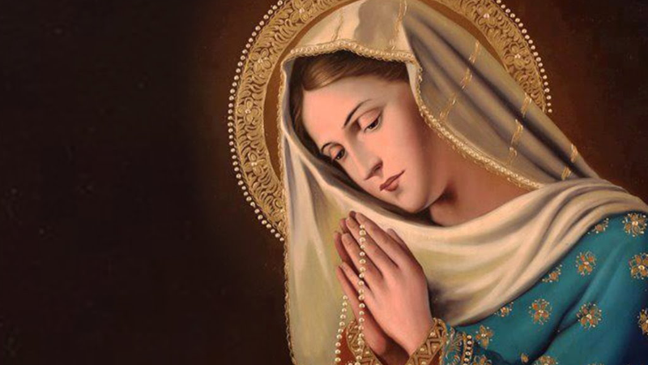

Bem-vindo à Defesa da Fé Católica
Descubra a verdade sobre a fé católica e explore as bases bíblicas e históricas que sustentam nossas crenças.
Saiba Mais

Intercessão dos Santos
Veja a base bíblica para a intercessão dos santos e a veneração de Maria.
Leia Mais